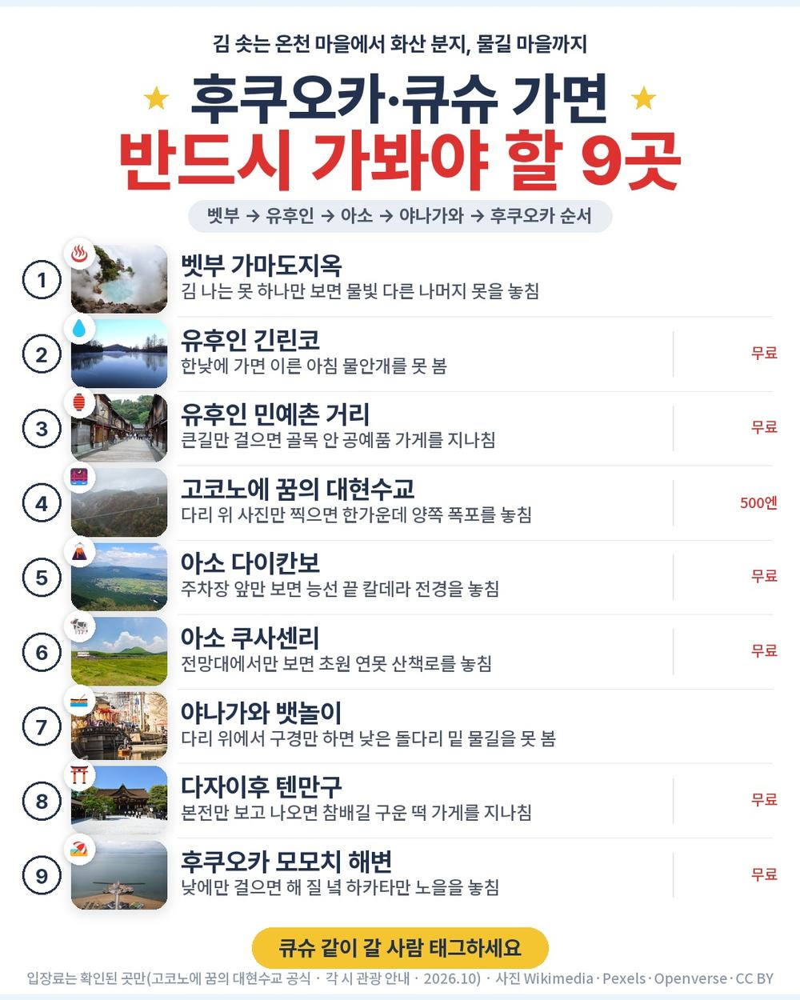
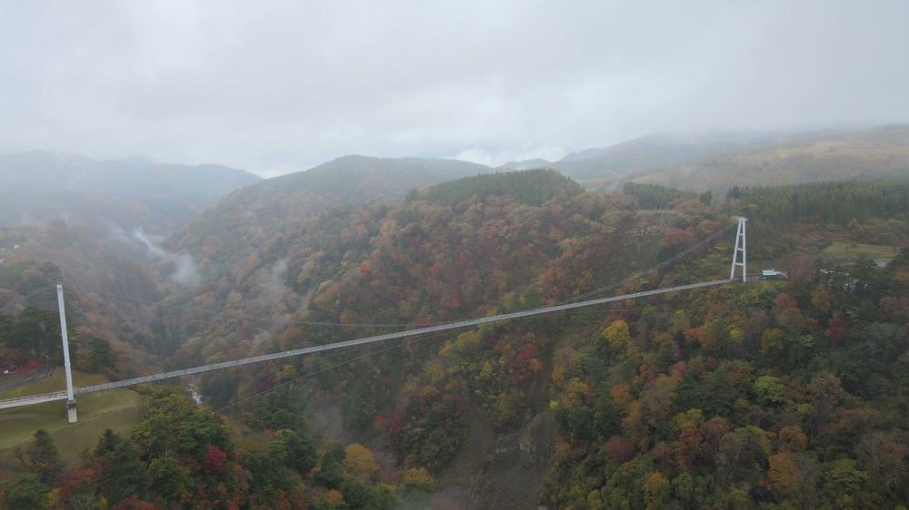
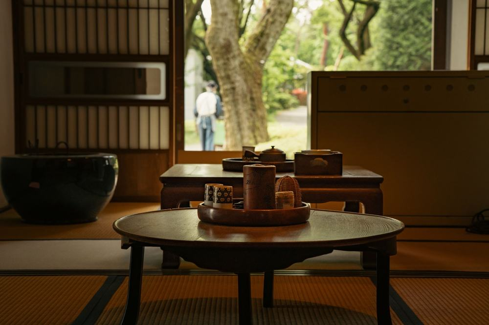
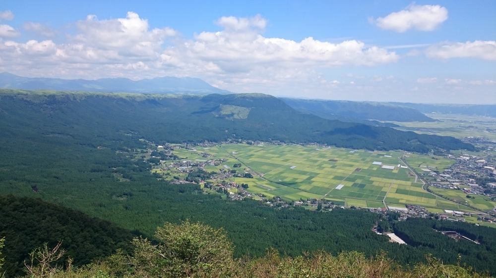
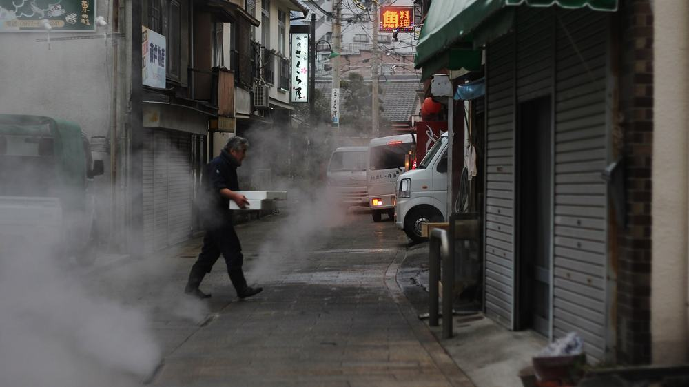
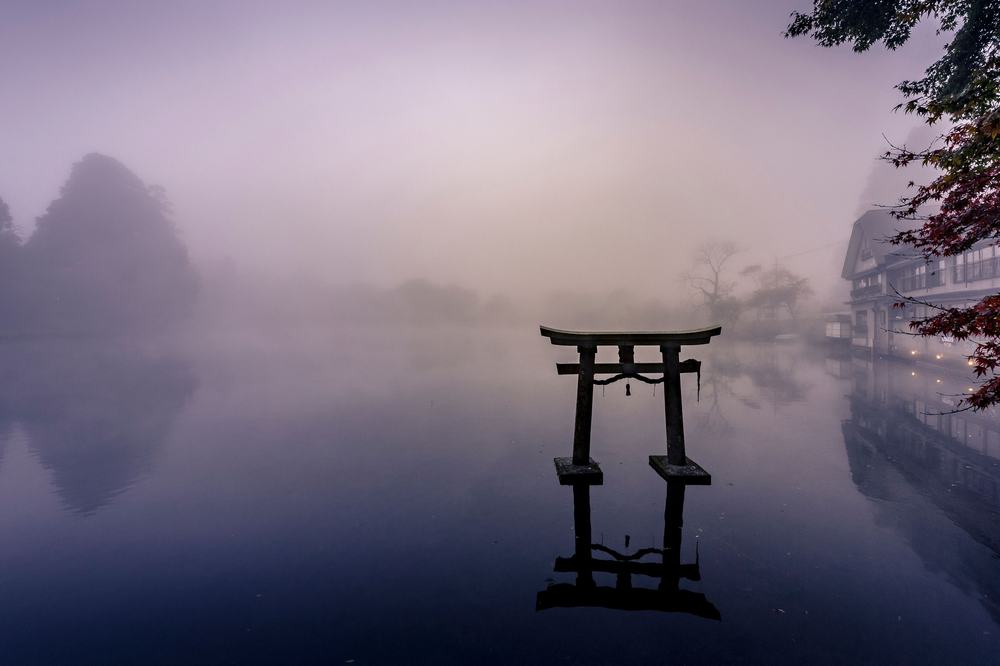
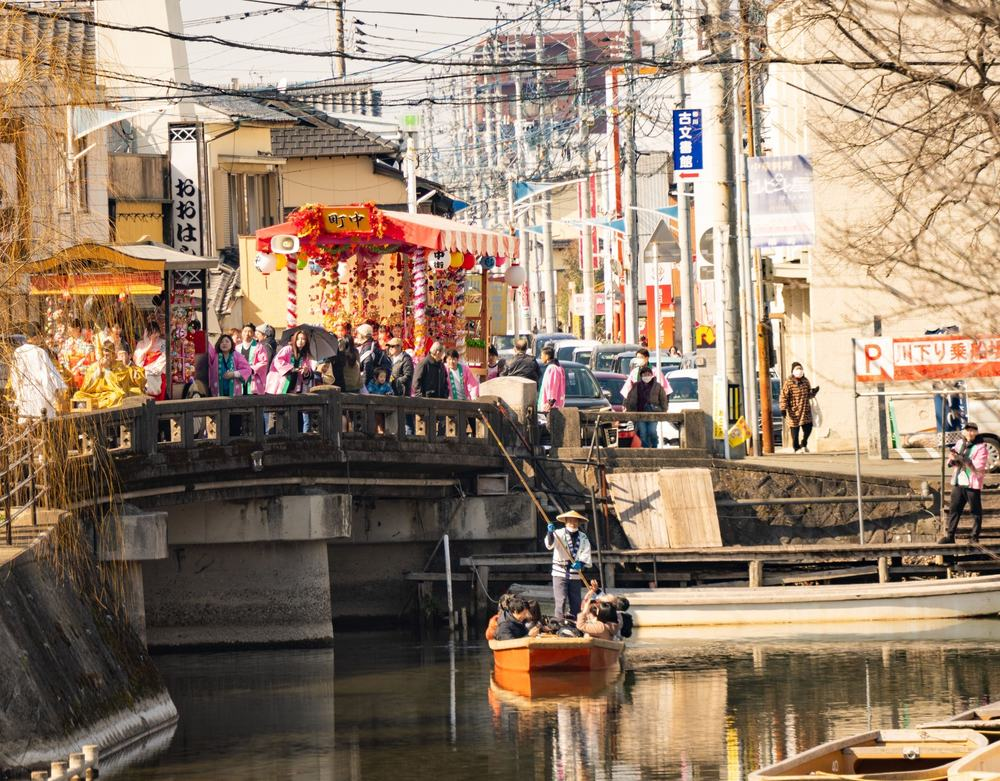
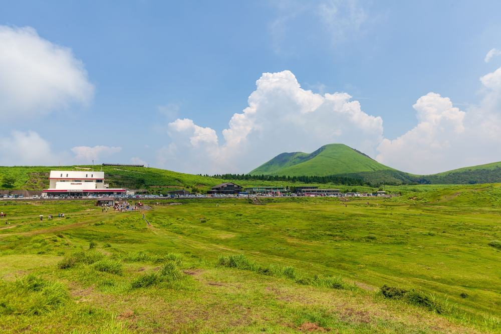

노랑풍선 후쿠오카 패키지 여행 94만 9천원, 벳부·아소 온천 두 밤에 야나가와 뱃놀이까지 넣은 구성

부모님 모시고 큐슈를 알아보면 2박 3일 상품은 온천이 한 밤뿐이고, 유후인만 찍고 돌아오는 일정이 많음. 온천을 두 번은 해야 다녀온 기분이 난다는 게 우리 집 의견이었음.
그러다 노랑풍선 상품이 눈에 들어옴. 벳부 한 밤, 아소 한 밤 온천에 마지막 밤은 후쿠오카 힐튼이고, 둘째 날 저녁은 게 뷔페에 술까지 무제한임. 대신 첫날 저녁이 상품에 없음.
결론 — 추천. 진에어 직항에 온천 료칸호텔 2박 + 힐튼 1박, 선택관광 0개, 가마도지옥·긴린코·꿈의 대현수교·다이칸보·야나가와 뱃놀이·다자이후까지 포함임. 다만 공용 온천 대욕장이 불편한 분, 첫날 저녁을 꼭 드셔야 하는 분, 호텔을 미리 골라 두고 싶은 분은 아님.
94만 9천원이 어디에 들어갔는지, 현지에서 더 내는 돈은 얼마인지 원문을 하나씩 뜯어봤음.
| 항목 | 내용 |
|---|---|
| 가격 | 1인 949,000원 (성인 · 10월 출발 기준) |
| 여행사 | 노랑풍선 |
| 항공 | 진에어 직항 · 인천 16:05 → 기타큐슈 17:30 / 기타큐슈 18:30 → 인천 20:05 |
| 숙소 | 온천 료칸호텔 2박(벳부·아소) + 후쿠오카 호텔 1박(예정 힐튼 후쿠오카 시호크) · 출발 3일 전 문자 확정 |
| 일정 | 3박 4일 · 전용 버스 · 한국어 가이드 · 식사 7회 · 쇼핑 1회 · 선택관광 0 |
| 가는 곳 | 벳부 가마도지옥·유노하나 · 유후인 긴린코·민예촌 거리 · 꿈의 대현수교 · 아소 다이칸보·쿠사센리 · 야나가와 뱃놀이 · 다자이후 텐만구 · 모모치 해변·라라포트 · 고쿠라 |
▶ 내 출발일 오늘 기준 요금 확인 (제휴 링크 · 예약 시 수수료를 받으며 가격은 같습니다)
▶ 10월 14일 기준 후쿠오카 패키지 최저 48만 9천원부터 — 출발일별 값 한 화면에: 비교 페이지
| 순서 | 다루는 것 | 한 줄 결론 |
|---|---|---|
| 1 | 구성 뜯어보기 | 선택관광 0, 현지 추가금은 가이드 경비 4,000엔 + 첫날 저녁 |
| 2 | 일정 살펴보기 | 2일차가 벳부에서 아소까지 가장 꽉 찬 날 |
| 3 | 자유여행 VS 패키지 | 직접 짜면 96만원 | 값은 비슷하고, 그 값에 사흘 운전·가이드·게 뷔페 저녁 |
1. 구성 뜯어보기
요약 — 진에어 왕복·온천 2박·후쿠오카 1박·식사 7회·관광 입장·가이드·전용 버스·보험이 들어 있음. 선택관광은 0, 쇼핑은 1회, 현지에서 더 내는 건 가이드·기사 경비 1인 4,000엔과 첫날 저녁값임.
1-1. 94만 9천원에 들어 있는 것

포함 항목을 정리하면 이럼.
- 진에어 직항 왕복 항공권 + 유류할증료·세금
- 온천 료칸호텔 2박 + 후쿠오카 호텔 1박 (2인 1실)
- 식사 7회 (2일차 저녁 게 뷔페 + 음료·주류 무제한 포함)
- 관광지 입장료 · 전용 버스 · 한국어 가이드
- 여행자보험
이 상품의 차별점은 온천을 두 번 연속으로 한다는 것임. 벳부에서 한 밤, 아소에서 한 밤을 자고 마지막 밤만 도심 호텔이라, 저녁·아침 온천을 두 번씩 할 수 있음.
출발일별 요금 확인하기
https://naver.me/FM9t92T2
1-2. 식사 일곱 번, 비는 끼니 둘

식사는 7회임. 2일차 아침·점심·저녁, 3일차 아침·점심, 4일차 아침·점심이 들어 있음. 그중 2일차 저녁이 게 뷔페 + 음료·주류 무제한이고, 이번 일정에서 유일한 호텔 저녁임.
비는 끼니는 둘임. 1일차 저녁은 불포함이고, 3일차 저녁은 자유식인데 1인 1,000엔을 줌. 벳부 도착이 저녁 7시 무렵이라 첫날은 공항에서 간단히 먹고 버스를 타는 게 편함.
1-3. 호텔

호텔 이름은 지정이 안 되고 출발 3일 전에 문자로 알려 줌. 원문 예정 호텔은 벳푸 하나미즈키, 호텔 카도만, 힐튼 후쿠오카 시 호크임.
두 밤은 온천 대욕장이 있는 료칸호텔임. 남녀가 나뉘고 수영복은 못 입음. 마지막 밤 후쿠오카 호텔은 바닷가 모모치 쪽이라 저녁 산책하기 좋음. 혼자 방을 쓰면 싱글 요금이 붙는데, 원문에 금액이 두 가지로 적혀 있어 예약 때 확인이 필요함.
1-4. 현장에서 더 낼 돈
| 항목 | 금액 | 비고 |
|---|---|---|
| 가이드·기사 경비 | 약 67,000원 | 1인 4,000엔 × 2 (성인·소아 같음) |
| 1일차 저녁 | 각자 | 불포함 — 공항·휴게소에서 간단히 |
| 3일차 저녁 | 0원~ | 자유식, 1인 1,000엔 지급 · 넘는 만큼만 |
| 선택관광 | 0원 | 선택관광 없음 |
| 합계 (2인) | 약 67,000원 + 첫날 저녁 | 상품가 189만 8천원 + 약 7만원 = 약 197만원 |
두 사람이면 약 197만원, 한 사람으로 치면 약 98만원임. 환율은 100엔 약 842원으로 잡았음. 여기에 첫날 저녁값만 더하면 됨.
1절 자주 나오는 질문
Q. 선택관광은 정말 없나요?
A. 없음. 선택관광 항목이 비어 있고, 현수교·뱃놀이 같은 입장료가 상품가 안에 들어 있음.
Q. 쇼핑은 몇 번인가요?
A. 1회임. 후쿠오카 잡화점 약 40분이고, 사는 건 자유임.
Q. 게 뷔페는 언제 나오나요?
A. 2일차 저녁, 아소 온천 호텔에서 나옴. 음료와 주류까지 무제한이고, 이번 일정에서 저녁이 포함된 날은 이날 하루임.
2. 일정 살펴보기
요약 — 1일차 오후 비행기로 벳부 온천, 2일차 가마도지옥·유후인·꿈의 대현수교·다이칸보·쿠사센리를 거쳐 아소 온천, 3일차 야나가와·다자이후·후쿠오카, 4일차 고쿠라와 쇼핑 1회 뒤 저녁 비행기로 귀국.
2-1. 하루하루 어디를 가나

| 일차 | 가는 곳 | 식사 | 숙소 |
|---|---|---|---|
| DAY 1 | 인천 16:05 출발 → 기타큐슈 17:30 도착 → 벳부 이동(약 1시간 30분) → 체크인·온천 | 없음 | 벳부 온천 료칸호텔 |
| DAY 2 | 가마도지옥·유노하나 → 유후인 긴린코·민예촌 거리 → 꿈의 대현수교 → 다이칸보·쿠사센리·밀크팩토리 | 조 호텔식 · 중 현지식 · 석 게 뷔페 | 아소 온천 료칸호텔 |
| DAY 3 | 야나가와 뱃놀이 → 다자이후 텐만구 → 후쿠오카 모모치 해변·라라포트 | 조 호텔식 · 중 현지식 · 석 자유식(1,000엔) | 후쿠오카 호텔 |
| DAY 4 | 고쿠라 → 쇼핑 1회 → 기타큐슈 18:30 출발 → 인천 20:05 도착 | 조 호텔식 · 중 현지식 | — |
| 일차 | 버스 이동 | 걷기 | 포함 식사 |
|---|---|---|---|
| DAY 1 | 약 1.7시간 | 적음 | 포함 끼니 없음 |
| DAY 2 | 약 3.5시간 | 보통 | 조 호텔식 · 중 현지식 · 석 호텔식 |
| DAY 3 | 약 3시간 | 보통 | 조 호텔식 · 중 현지식 · 석 자유식 |
| DAY 4 | 약 2시간 | 적음 | 조 호텔식 · 중 현지식 |
| 합계 | 약 10.2시간 | - | 포함 7끼 (호텔식 4 · 현지식 3) + 자유식 1(1,000엔 지급) |
요약 — 버스 이동은 4일 동안 약 10.2시간, 포함 식사는 7끼(호텔식 4 · 현지식 3)에 자유식 1번임. 가장 많이 걷는 날은 DAY 2임.
2-2. 1일차 — 오후 비행기, 밤은 벳부

오후 4시 5분 비행기라 오전엔 여유가 있음. 기타큐슈 공항에 내려 버스로 약 1시간 30분을 달려 벳부에 닿음. 이날은 저녁이 없고, 체크인 뒤 바로 온천에 들어가는 날임.
2-3. 2일차 — 벳부에서 아소까지

아침엔 김이 솟는 가마도지옥과 초가 오두막이 모인 유노하나 마을을 봄. 유노하나는 온천 성분을 결정으로 길러 입욕제를 만드는 곳이고, 그 제조 기술이 국가 중요무형민속문화재임.
벳부에서 40분이면 유후인임. 민예촌 거리를 걷고 긴린코를 본 뒤 남쪽으로 내려가 꿈의 대현수교를 건넘. 오후엔 아소의 다이칸보에서 칼데라를 내려다보고 쿠사센리 초원을 지나 아소 온천 호텔에 들어감. 이날이 일정에서 가장 꽉 찬 날이라 편한 신발이 필수임.
2-4. 3일차·4일차 — 물길 마을과 후쿠오카, 그리고 고쿠라

아소에서 버스 약 1시간 40분이면 야나가와임. 엔진 없이 장대로 미는 나룻배를 타고 물길을 내려감. 이어서 다자이후 텐만구, 오후엔 후쿠오카 모모치 해변과 라라포트에서 자유시간이 있음.
4일차는 고쿠라로 올라가 점심을 먹고 쇼핑 한 곳을 들른 뒤 기타큐슈 공항으로 감. 비행기가 저녁 6시 30분이라 마지막 날도 반나절이 남음.
2절 자주 나오는 질문
Q. 많이 걷나요?
A. 2일차가 가장 많이 걸음. 현수교는 왕복 780m이고 유후인 거리와 긴린코도 걸어서 봄. 나머지 날은 버스로 옮겨 다니며 짧게 걷는 편임.
Q. 비행기는 몇 시인가요?
A. 진에어 직항이고 인천 16:05 출발 → 기타큐슈 17:30 도착, 귀국은 기타큐슈 18:30 출발 → 인천 20:05 도착임(원문 항공 정보 기준). 후쿠오카가 아니라 기타큐슈 공항이라는 점을 기억해 두면 좋음.
Q. 준비할 건 뭔가요?
A. 일본 콘센트는 11자 모양이라 어댑터가 필요함. 가이드 경비는 엔화 현금으로 내니 조금 바꿔 가면 편함. 10월 후쿠오카 낮 기온은 23도 안팎(일본 기상청 평년값)인데 다이칸보·쿠사센리는 높아서 더 서늘함.
3. 자유여행 VS 패키지 | 직접 짜면 96만원
요약 — 같은 일정을 직접 짜면 1인 96만원쯤 듦. 패키지는 가이드 경비를 더해 약 98만원이라 값은 거의 같고, 그 값에 사흘 운전·가이드·게 뷔페 저녁이 들어 있음.
3-1. 같은 일정을 직접 짜면

같은 일정을 혼자 짠다고 치고 항목별로 계산해 봄. 10월 말 출발, 2인 1실 1인분임. 항공 말고는 추정치라 근거 열에 적어 둠.
| 항목 | 금액 | 근거 |
|---|---|---|
| 인천–후쿠오카 왕복 항공 | 400,700원 | ICN↔FUK 직항 왕복 1인 40만원 (패키지와 같은 날 출발 · 2026-10-14 마이리얼트립 조회) |
| 온천 료칸 2박 (1박 2식) | 260,000원 | 2인 1실 1인분 × 2 (추정) |
| 후쿠오카 특급호텔 1박 | 110,000원 | 2인 1실 1인분 (추정) |
| 식사 (점심 3 · 저녁 1) | 50,000원 | 현지식 기준 (추정) |
| 공항 이동 · 렌터카 3일 | 90,000원 | 렌터카·기름·통행료 2인 나눔 (추정) |
| 입장료·뱃놀이 | 30,000원 | 현수교·지옥·뱃놀이 (추정) |
| 여행자보험 · 유심 | 20,000원 | 4일 기준 |
| 가이드 | — | 자유여행은 없음 |
| 합계 | 약 960,000원 |
직접 짜실 분은 이 날짜 항공권부터 보세요 — https://myrealt.rip/viQB04 (마이리얼트립 제휴 링크)
패키지는 949,000원에 가이드 경비 4,000엔을 더해 약 98만원임.
3-2. 그래서 뭐가 다른가
값은 거의 같은데, 직접 짜면 사흘을 운전해야 함. 현수교·다이칸보·쿠사센리는 대중교통으로 하루에 잇기 어려워 렌터카가 사실상 필수임.
- 일본은 좌측 통행이라 운전이 낯선 분이 많음
- 벳부 → 유후인 → 고코노에 → 아소 산길을 하루에 직접 몰아야 함
- 료칸 저녁 시간에 맞춰 도착하도록 동선을 직접 짜야 함
패키지는 이 전부가 전용 버스 한 대로 붙고, 한국어 가이드가 붙음. 자유여행 계산표에 가이드 행이 비어 있는 게 그 뜻임 — 0원이 아니라 살 수 없는 것임.
3-3. 어느 쪽이 맞나
| 자유여행이 맞음 | 패키지가 맞음 |
|---|---|
| 일본 운전이 익숙함 | 운전 없이 다니고 싶음 |
| 료칸을 직접 고르고 싶음 | 온천 두 밤을 한 번에 맡기고 싶음 |
| 한 곳에 오래 머물고 싶음 | 큐슈 북쪽을 한 번에 돌고 싶음 |
| 저녁을 매일 직접 고르고 싶음 | 부모님과 무리 없이 돌고 싶음 |
3절 자주 나오는 질문
Q. 자유여행이 더 싸지 않나요?
A. 계산해 보면 자유여행이 약 96만원, 패키지가 가이드 경비를 더해 약 98만원임. 거의 같음. 차이는 렌터카 운전과 가이드, 게 뷔페 저녁에서 남.
Q. 같은 후쿠오카인데 더 싼 패키지도 있지 않나요?
A. 있음. 70만원대 2박 3일 상품도 있음. 대신 온천이 한 밤이거나 아소·야나가와가 빠진 경우가 많아서, 온천 횟수와 동선으로 고르면 됨.
Q. 기타큐슈 공항이면 불편하지 않나요?
A. 벳부 쪽으로 바로 내려가는 동선이라 이 일정엔 오히려 맞음. 다만 공항에서 벳부까지 버스로 약 1시간 30분이라 첫날은 이동이 전부임.
마무리
정리하면 이럼.
추천함. 94만 9천원에 진에어 직항, 온천 료칸호텔 2박과 후쿠오카 호텔 1박, 식사 7회, 가마도지옥·긴린코·꿈의 대현수교·다이칸보·야나가와 뱃놀이·다자이후가 들어 있음. 선택관광이 없고, 현지에서 더 내는 건 가이드 경비 4,000엔과 첫날 저녁값임.
이런 분은 고르면 안 됨. 공용 온천 대욕장이 불편한 분, 첫날 저녁을 꼭 드셔야 하는 분, 호텔을 미리 골라 두고 싶은 분.
| 맞는 사람 | 안 맞는 사람 |
|---|---|
| 큐슈가 처음임 | 공용 온천이 불편함 |
| 온천을 두 번 하고 싶음 | 첫날 저녁이 꼭 있어야 함 |
| 선택관광 권유가 싫음 | 호텔을 미리 정하고 싶음 |
걸리는 점이 있긴 한데 상품 흠이라기보다 맞는 사람과 안 맞는 사람을 가르는 조건에 가까움.
오늘 기준 출발일별 요금 보기
https://naver.me/FM9t92T2
같은 목적지 다른 여행사 패키지, 쇼핑·선택관광·가이드 경비까지 비교
https://pkg-lab.com/go/?q=%ED%9B%84%EC%BF%A0%EC%98%A4%EC%B9%B4&utm_source=blog&utm_medium=post&utm_campaign=daily
함께 보면 좋은 글
노랑풍선 홍콩 마카오 패키지 여행 132만원대, 부모님이랑 낮 비행기로 두 도시 가도 될까
https://blog.naver.com/robotnady10/224439979699
편한여행사 다낭 패키지 여행 94만원대, 바나힐에 쇼핑 0번 옵션 0개 진짜일까
https://blog.naver.com/robotnady10/224438633760
이 글에는 네이버·마이리얼트립 제휴 링크가 포함되어 있으며, 링크를 통해 예약하시면 일정 수수료를 받습니다. 가격은 동일합니다. 가격과 구성은 2026년 10월 14일 확인 기준이며 출발일에 따라 달라질 수 있습니다.
▶ 이 상품, 영상으로 보기 (유튜브)
▶ 후쿠오카 패키지 오늘 값 나란히 비교
▶ 같은 목적지 다른 여행사 패키지, 쇼핑·선택관광·가이드 경비까지 비교: pkg-lab.com
사진 출처 (저작자 · 라이선스):
Yaseminkurr — BY-SA 4.0 (Openverse) 원본
Beppu City — CC BY-SA 3.0 (Wikimedia Commons) 원본

그 밖의 사진: Pexels 영상 프레임 · Pexels
쇼츠·클립 영상과 사진:
阿蘇山噴火口 草千里 まるで火星？宇宙のような光景 ドローン映像 阿蘇ドライブ Aerial dro — 九州山地ラジオ【聞き流し】 (YouTube, CC BY) 원본
【神業！？】目の前に低い橋！どうするの、柳川のどんこ舟 船頭さん2018春 in 福岡 — 大分のtakatch親方(たかし・タカッチ) (YouTube, CC BY) 원본
20240315 Kusasenrigahama 01 — CC BY 4.0 (Wikimedia Commons) 원본

【2020日本旅】大分県03｜金鱗湖（きんりんこ）晨霧 — Natsuki HUANG (YouTube, CC BY) 원본